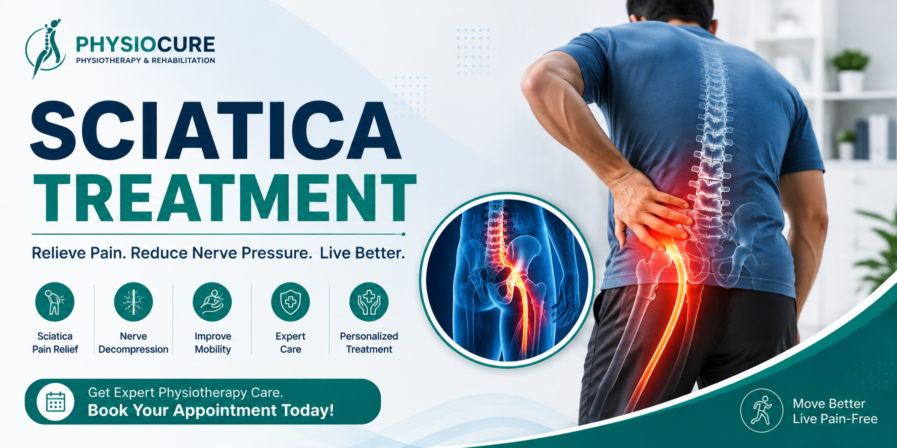

Sciatica Treatment
Sciatica is a condition caused by irritation or compression of the sciatic nerve, resulting in pain that radiates from the lower back through the buttock and down one or both legs. Physiotherapy is one of the most effective non-surgical treatments to relieve pain, restore mobility, and prevent future episodes.

What is Sciatica?
The sciatic nerve is the longest and largest nerve in the human body. It starts in the lower back, passes through the buttocks, and extends down each leg. When this nerve becomes compressed or irritated, it causes pain, numbness, tingling, or weakness known as Sciatica.
The pain may vary from a mild ache to severe burning pain that makes walking, sitting, or standing difficult.
Common Symptoms
- Lower back pain
- Pain radiating down one leg
- Burning sensation in the leg
- Numbness in the foot or leg
- Tingling sensation
- Muscle weakness
- Pain while sitting
- Difficulty standing for long periods
- Pain while bending forward
Common Causes
- Herniated (Slipped) Disc
- Lumbar Disc Degeneration
- Spinal Stenosis
- Piriformis Syndrome
- Spondylolisthesis
- Spinal Injuries
- Poor Posture
- Heavy lifting
Risk Factors
- Age above 40 years
- Long sitting hours
- Desk jobs
- Obesity
- Diabetes
- Lack of exercise
- Frequent heavy lifting
- Smoking
How Physiotherapy Helps
Physiotherapy aims to reduce nerve compression, improve spinal mobility, strengthen supporting muscles, and restore normal movement without surgery.
- Pain relief techniques
- Nerve mobilization
- Lumbar stabilization exercises
- Core strengthening
- Stretching exercises
- Posture correction
- Manual therapy
- Home exercise program
Recommended Exercises
- McKenzie Extension Exercise
- Pelvic Tilt
- Knee to Chest Stretch
- Hamstring Stretch
- Piriformis Stretch
- Cat-Camel Exercise
- Bridging Exercise
- Core Strengthening Exercises
These exercises should be performed only after evaluation by a qualified physiotherapist.
Prevention Tips
- Maintain proper posture while sitting.
- Avoid prolonged sitting.
- Exercise regularly.
- Strengthen your core muscles.
- Lift heavy objects correctly.
- Maintain a healthy body weight.
- Take regular breaks during office work.
- Sleep on a supportive mattress.
When Should You Visit a Physiotherapist?
- Pain lasting more than one week.
- Pain radiating below the knee.
- Numbness or tingling in the leg.
- Difficulty walking.
- Muscle weakness.
- Recurrent episodes of back pain.
- Difficulty performing daily activities.
Frequently Asked Questions
Can Sciatica heal without surgery?
Yes. Most patients recover successfully with physiotherapy, exercises, and lifestyle modifications without surgery.
How long does Sciatica last?
Many people improve within 4 to 8 weeks, although recovery depends on the severity of nerve compression and individual health.
Is walking good for Sciatica?
Gentle walking is often beneficial, but excessive walking during severe pain may worsen symptoms. Your physiotherapist will guide you based on your condition.
Can physiotherapy permanently cure Sciatica?
Physiotherapy treats the underlying cause, improves posture and muscle strength, and significantly reduces the chances of recurrence when exercises are continued regularly.
Looking for Effective Sciatica Treatment?
Our experienced physiotherapists provide personalized assessment, evidence-based treatment, nerve mobilization techniques, and rehabilitation exercises to help you return to a pain-free and active life.
Contact Us